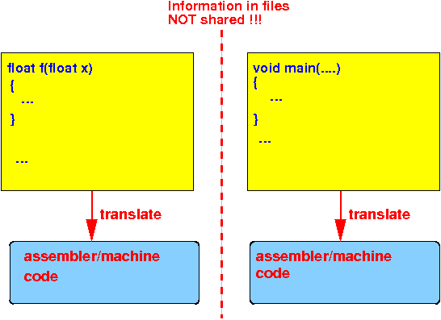

| File 1 (prog1.c) | File 2 (prog2.c) |
|---|---|
float f(float x); // Declare function f( )
int main( int argc, char *argv[] )
{
int a, b;
float c, d;
a = 2;
b = f( a ); // Call f( )
printf( "f(%d) = %d\n", a, b);
c = 2.0;
d = f( c ); // Call f( )
printf( "f(%f) = %f\n", c, d);
}
|
float f( float x )
{
return ( x*x );
}
|
The simplest way to compile a multi-file C program:
gcc prog1.c prog2.c .... |
cd /home/cs255000/demo/c/multiple-files
gcc prog1.c prog2.c
a.out
Output:
f(2) = 4
f(2.000000) = 4.000000
|
|
Schematically:
|  |
|
Result:
|